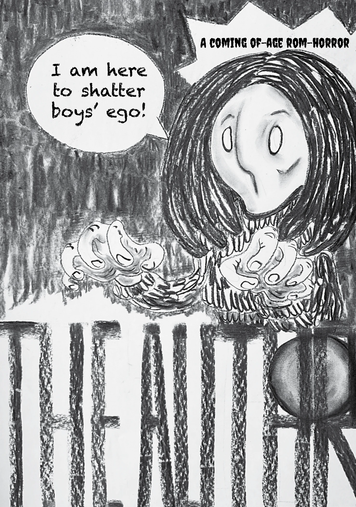

Unpublished zine
An unpublished comic zine.
Five pages, in English.
Read the zine

Use the buttons or the left and right arrow keys to turn the pages.
Design, research & the making of things
An unpublished comic zine.
Five pages, in English.

Use the buttons or the left and right arrow keys to turn the pages.